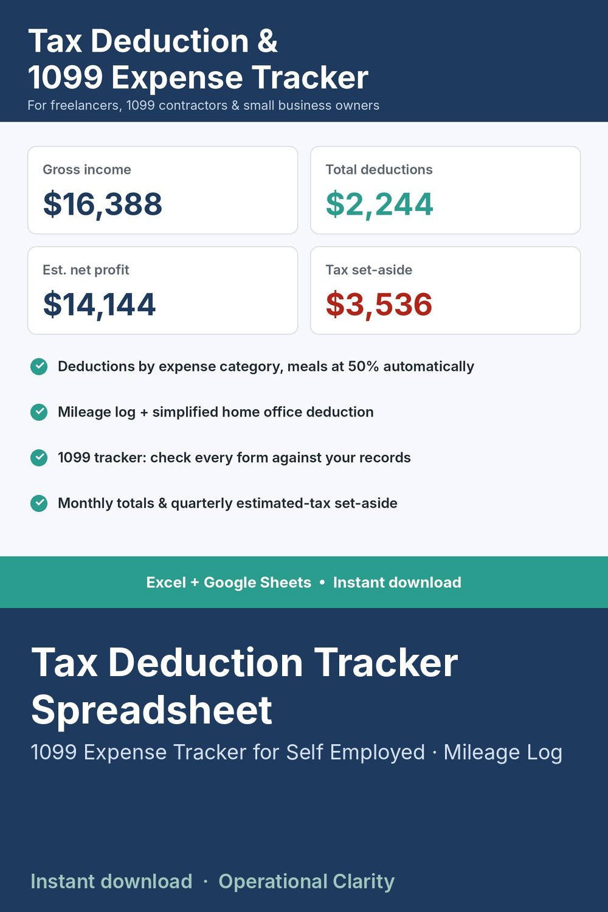

Tax Deduction Tracker Spreadsheet

TAX DEDUCTION & 1099 EXPENSE TRACKER | Self-Employed Tax Spreadsheet | Excel & Google Sheets | Instant Download
Stop digging through bank statements in April. Log income, business expenses and mileage as you go, and this spreadsheet totals your deductions by category, estimates your net profit and tells you how much to set aside for quarterly taxes.
WHAT IT DOES
• Income log: every payment, who paid you, and whether a 1099 is expected (1099-NEC, 1099-K, 1099-MISC)
• Expense log with 20 Schedule C-style categories (advertising, supplies, software, travel, phone, contract labor and more)
• Meals counted at 50% automatically
• Business-use % for mixed-use costs like your phone or internet
• Mileage log: enter start and end odometer, miles and deduction calculate for you
• Simplified home office deduction (square feet x rate, capped at 300 sq ft)
• 1099 tracker: totals what each client or platform paid you, so you can check every 1099 you receive
• Dashboard: gross income, total deductions, estimated net profit and suggested tax set-aside
• Monthly income vs expenses with a chart
• Quarterly set-aside for each estimated-tax period (due Apr 15, Jun 15, Sep 15, Jan 15)
BEST FOR
Freelancers, 1099 contractors, Etsy and online sellers, side hustlers and small business owners who file their own taxes or hand a clean summary to their accountant.
WHAT YOU GET
• 1 Excel workbook (.xlsx) with 7 tabs: START HERE, DASHBOARD, SETTINGS, INCOME, EXPENSES, MILEAGE, 1099 TRACKER
• 500 income rows, 1,000 expense rows, 500 mileage rows
• Example data so you can see how it works (just type over it)
HOW TO USE
Set your tax year, mileage rate and set-aside % once in SETTINGS. Then log as you go. Start a new copy each tax year.
COMPATIBILITY
Microsoft Excel. For Google Sheets, upload the file to Google Drive and open it with Google Sheets.
GOOD TO KNOW
• This is an organizing tool, not tax advice. Tax rates, mileage rates and rules change each year. Enter the current rates and confirm anything you're unsure about with a tax professional.
• Digital download. No physical item will be shipped.
• Personal / single-business use only. No reselling or sharing of the file.